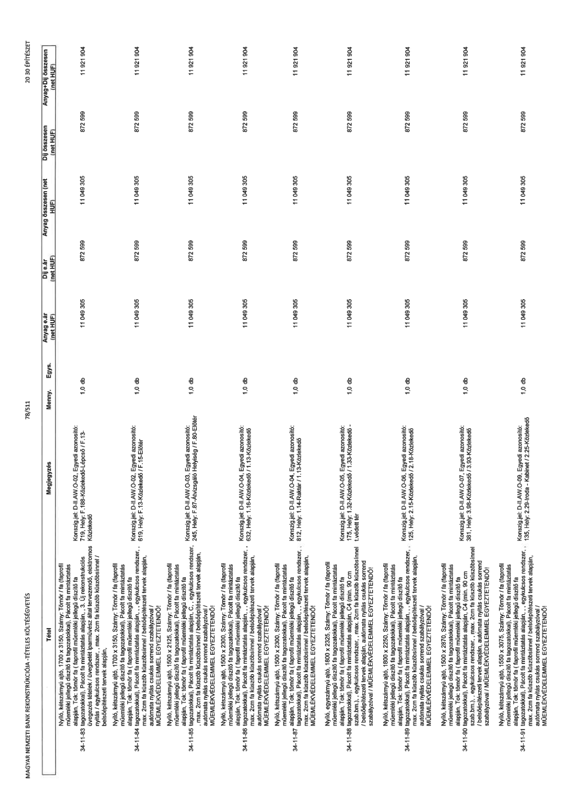

| Tétel | Megjegyzés | Menny. | Egys. | Anyag e.ár (net HUF) | Díj e.ár (net HUF) | Anyag összesen (net HUF) | Díj összesen (net HUF) | Anyag+Díj összesen (net HUF) |
|---|---|---|---|---|---|---|---|---|
| 34-11-83 Nyíló, kétszárnyú ajtó, 1750 x 3150, Szárny: Tömör / fa (laprolf műemléki jellegű díszítő fa tagozatokkal), Pácolt fa mintáztatás alapján, Tok: tömör fa ( faprolf műemléki jellegű díszítő fa tagozatokkal), Pácolt fa mintáztatás alapján, . 3. új rekonstrukciók üvegezés falécek / üvegbetét iparművész által tervezendő, elektromos nyitás / egykulcsos rendszer, ... max. 2cm fa küszöb küszöbsínnel / belsőépítészeti tervek alapján, | Konsign.jel: D-II.AW.O-02, Egyedi azonosító: 719, Hely: F.188-Közlekedő-Lépcső / F.13-Közlekedő | 1,0 | db | 11 049 305 | 872 599 | 11 049 305 | 872 599 | 11 921 904 |
| 34-11-84 Nyíló, kétszárnyú ajtó, 1750 x 3150, Szárny: Tömör / fa (laprolf műemléki jellegű díszítő fa tagozatokkal), Pácolt fa mintáztatás alapján, Tok: tömör fa ( faprolf műemléki jellegű díszítő fa tagozatokkal), Pácolt fa mintáztatás alapján, (,,), „ egykulcsos rendszer, max. 2cm fa küszöb küszöbsínnel / belsőépítészeti tervek alapján, automata nyitás csukás sorrend szabályzóval / MŰEMLÉKVÉDELEMMEL EGYEZTETENDŐ! | Konsign.jel: D-II.AW.O-02, Egyedi azonosító: 619, Hely: F.13-Közlekedő / F.15-Előtér | 1,0 | db | 11 049 305 | 872 599 | 11 049 305 | 872 599 | 11 921 904 |
| 34-11-85 Nyíló, kétszárnyú ajtó, 1500 x 2125, Szárny: Tömör / fa (laprolf műemléki jellegű díszítő fa tagozatokkal), Pácolt fa mintáztatás alapján, Tok: tömör fa ( faprolf műemléki jellegű díszítő fa tagozatokkal), Pácolt fa mintáztatás alapján, C, „ egykulcsos rendszer, max. 2cm fa küszöb küszöbsínnel / belsőépítészeti tervek alapján, automata nyitás csukás sorrend szabályzóval / MŰEMLÉKVÉDELEMMEL EGYEZTETENDŐ! | Konsign.jel: D-II.AW.O-03, Egyedi azonosító: 245, Hely: F.87-Átvizsgáló Helyiség / F.80-Előtér | 1,0 | db | 11 049 305 | 872 599 | 11 049 305 | 872 599 | 11 921 904 |
| 34-11-86 Nyíló, kétszárnyú ajtó, 1500 x 2300, Szárny: Tömör / fa (laprolf műemléki jellegű díszítő fa tagozatokkal), Pácolt fa mintáztatás alapján, Tok: tömör fa ( faprolf műemléki jellegű díszítő fa tagozatokkal), Pácolt fa mintáztatás alapján, ... „ egykulcsos rendszer, max. 2cm fa küszöb küszöbsínnel / belsőépítészeti tervek alapján, automata nyitás csukás sorrend szabályzóval / MŰEMLÉKVÉDELEMMEL EGYEZTETENDŐ! | Konsign.jel: D-II.AW.O-04, Egyedi azonosító: 632, Hely: 1.18-Közlekedő / 1.13-Közlekedő | 1,0 | db | 11 049 305 | 872 599 | 11 049 305 | 872 599 | 11 921 904 |
| 34-11-87 Nyíló, kétszárnyú ajtó, 1500 x 2300, Szárny: Tömör / fa (laprolf műemléki jellegű díszítő fa tagozatokkal), Pácolt fa mintáztatás alapján, Tok: tömör fa ( faprolf műemléki jellegű díszítő fa tagozatokkal), Pácolt fa mintáztatás alapján, ... „ egykulcsos rendszer, max. 2cm fa küszöb küszöbsínnel / belsőépítészeti tervek alapján, automata nyitás csukás sorrend szabályzóval / MŰEMLÉKVÉDELEMMEL EGYEZTETENDŐ! | Konsign.jel: D-II.AW.O-04, Egyedi azonosító: 812, Hely: 1.14-Raktár / 1.13-Közlekedő | 1,0 | db | 11 049 305 | 872 599 | 11 049 305 | 872 599 | 11 921 904 |
| 34-11-88 Nyíló, egyszárnyú ajtó, 1000 x 2325, Szárny: Tömör / fa (laprolf műemléki jellegű díszítő fa tagozatokkal), Pácolt fa mintáztatás alapján, Tok: tömör fa ( faprolf műemléki jellegű díszítő fa tagozatokkal), Pácolt fa mintáztatás alapján, C4, min. 90 cm szab.bm., ... egykulcsos rendszer, max. 2cm fa küszöb küszöbsínnel / belsőépítészeti tervek alapján, automata nyitás csukás sorrend szabályzóval / MŰEMLÉKVÉDELEMMEL EGYEZTETENDŐ! | Konsign.jel: D-II.AW.O-05, Egyedi azonosító: 175, Hely: 1.32-Közlekedő / 1.33-Közlekedő - 1.védett tér | 1,0 | db | 11 049 305 | 872 599 | 11 049 305 | 872 599 | 11 921 904 |
| 34-11-89 Nyíló, kétszárnyú ajtó, 1800 x 2250, Szárny: Tömör / fa (laprolf műemléki jellegű díszítő fa tagozatokkal), Pácolt fa mintáztatás alapján, Tok: tömör fa ( faprolf műemléki jellegű díszítő fa tagozatokkal), Pácolt fa mintáztatás alapján, ... egykulcsos rendszer, max. 2cm fa küszöb küszöbsínnel / belsőépítészeti tervek alapján, automata nyitás csukás sorrend szabályzóval / MŰEMLÉKVÉDELEMMEL EGYEZTETENDŐ! | Konsign.jel: D-II.AW.O-06, Egyedi azonosító: 125, Hely: 2.15-Közlekedő / 2.18-Közlekedő | 1,0 | db | 11 049 305 | 872 599 | 11 049 305 | 872 599 | 11 921 904 |
| 34-11-90 Nyíló, kétszárnyú ajtó, 1500 x 2870, Szárny: Tömör / fa (laprolf műemléki jellegű díszítő fa tagozatokkal), Pácolt fa mintáztatás alapján, Tok: tömör fa ( faprolf műemléki jellegű díszítő fa tagozatokkal), Pácolt fa mintáztatás alapján, C4, min. 90 cm szab.bm., ... egykulcsos rendszer, max. 2cm fa küszöb küszöbsínnel / belsőépítészeti tervek alapján, automata nyitás csukás sorrend szabályzóval / MŰEMLÉKVÉDELEMMEL EGYEZTETENDŐ! | Konsign.jel: D-II.AW.O-07, Egyedi azonosító: 381, Hely: 3.98-Közlekedő / 3.93-Közlekedő | 1,0 | db | 11 049 305 | 872 599 | 11 049 305 | 872 599 | 11 921 904 |
| 34-11-91 Nyíló, kétszárnyú ajtó, 1550 x 3075, Szárny: Tömör / fa (laprolf műemléki jellegű díszítő fa tagozatokkal), Pácolt fa mintáztatás alapján, Tok: tömör fa ( faprolf műemléki jellegű díszítő fa tagozatokkal), Pácolt fa mintáztatás alapján, ... egykulcsos rendszer, max. 2cm fa küszöb küszöbsínnel / belsőépítészeti tervek alapján, automata nyitás csukás sorrend szabályzóval / MŰEMLÉKVÉDELEMMEL EGYEZTETENDŐ! | Konsign.jel: D-II.AW.O-09, Egyedi azonosító: 135, Hely: 2.29-Iroda - Kabinet / 2.25-Közlekedő | 1,0 | db | 11 049 305 | 872 599 | 11 049 305 | 872 599 | 11 921 904 |
